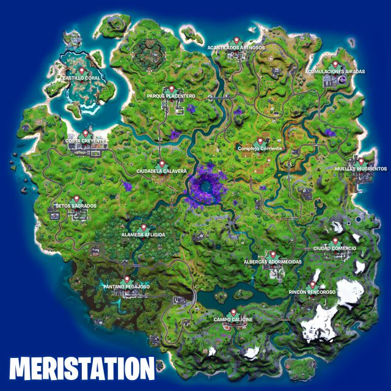

Blog sobre Fortnite
Mapa/Ciudades

Para más información acerca del nuevo mapa...
Ciudades más visitadas
- Parque Placentero
- Albercas Adormecidas
- Ciudad Comercio
- Ciudadela Calavera
Rareza de Armas
Ordenadas de la que hace más daño a la que hace menos daño.
- Rareza Legendaria: color naranja
- Rareza Épica: color morado
- Rareza Rara: color azul
- Rareza Poco Común: color verde
- Rareza Común: color blanco
Para más información acerca de las nuevas armas...
Autor: Lukas Solohaga